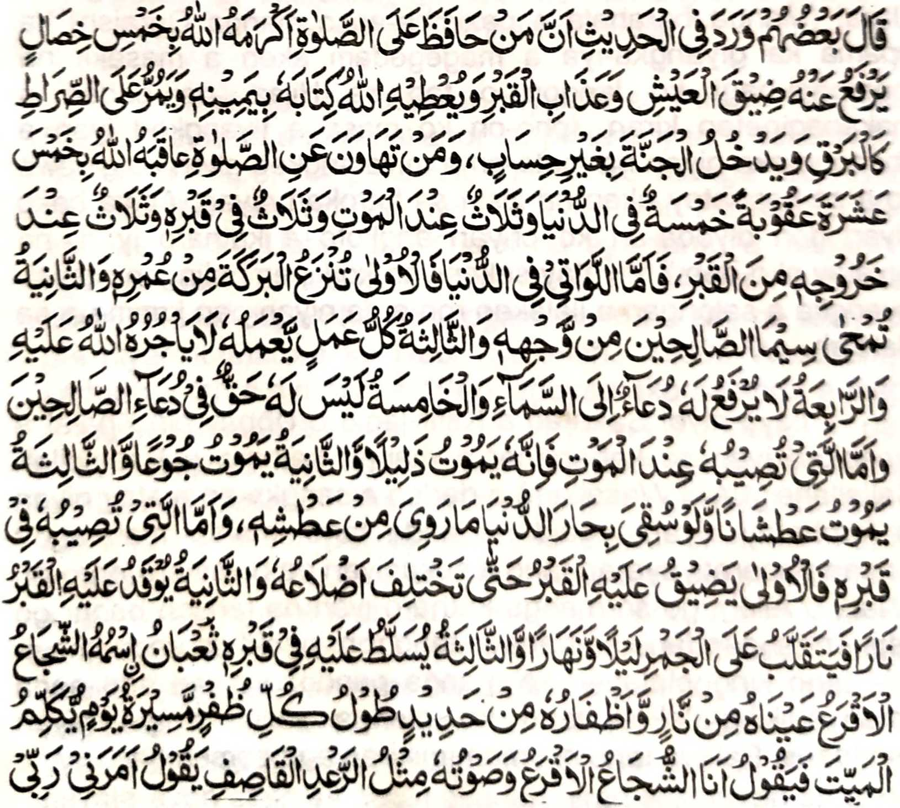
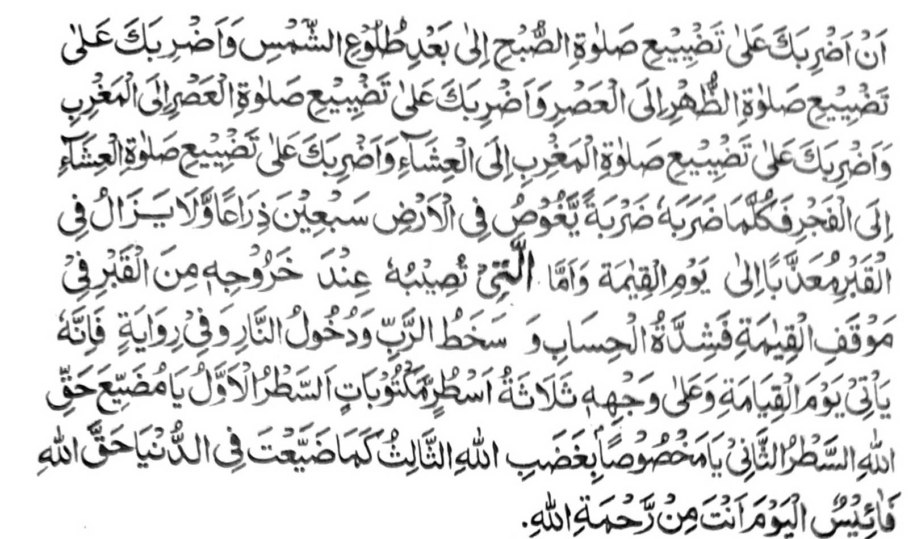
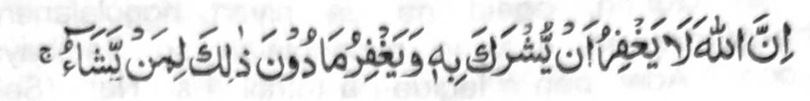
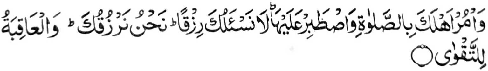
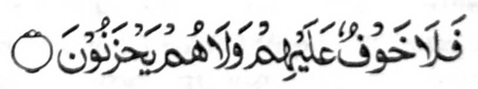

Pitharo o saba-ad ko miyanothol ko Hadith, "Mata-an a sa tao a somiyap ko Sambayang na balasan o Allah sa lima: phakalidasen sekaniyan ko kasimpit o kakhawiyagan, go phakalidas ko siksa sa Qobor, go ibegay ron o Allah so kitab iyan sa aya khikowa niyan non na so kawanan niyan, go phaka-okit ko sirat sa lagid o kilat, go phakasoled sa Sorga sa daden a kapamagitong. So peman so tao a indaraynon niyan so Sambayang na ziksa-an seka niyan o Allah sa sapolo a go lima: lima sa donya, telo ko sakaratal maut, telo ko Qobor, go telo ko kaphakaliyo niyan ko Qobor. So si-I ron sa donya na paganay ron na papasen o Allah so barakah ko kapagintao niyan, ika dowa na papasen o Allah ko bontal iyan so toos o manga pipiya-i 'amaal, ika telo na so langon o amal a pephagamalen niyan na da-a balas iyan ko Allah, ika pat na di khinaik so manga pangeni niyan ko langit, ika lima na daden a kabenar iyan [a bagi-an] ko pangeni o piphiya-piya. So peman so khisogaton ko kaphatay niyan na mata-an a sekaniyan na phatay a madidiyaman; ika dowa na phatay sekaniyan a pekha-or; ika telo na phatay sekaniyan a pekhawaw a apiya paki-inomon so langon o ragat sa donya na diyon makabolong sa kawaw. So peman so khisogaton ko Qobor na paganay ron na nggompiten sekaniyan o Qobor taman sa makazowa-soway so manga gosok iyan; ika dowa na khadeg so Qobor iyan sa apoy na pekheli-keliden sekaniyan ro-o sa gagawi-i daon-dao, ika telo na botawanan rekaniyan ko Qobor iyan so nipay a bebethowan sa Sojja-ol Aqra aya kailay niyan na kadeg go manga potao so kanoko niyan a aya katas iyan na salongan a ilalakaw ron sa tharo-on niyan sangkoto a miyatay: 'Saken so Sojja-ol Aqra' a so lago niyan na lagid o dalendeg a matanog. Tharo-on niyan, 'Siyogo ako o Kadenan ko a ziksa-an ko seka sabap ko kinibagaken ka ko Sambayang ko Soboh taman ko kaotho o alongan , go ziksa-an ko seka sabap ko kinibagaken ka ko Sambayang ko Dhohor taman ko 'Asr, go ziksa-an ko seka sabap ko kinibagaken ka ko Sambayang ko 'Asr taman ko Maghrib, go ziksa-an ko seka sabap ko kinibagaken ka ko Sambayang ko Maghrib taman ko 'Isha, go ziksa-an ko seka sabap ko kinibagaken ka ko Sambayang ko 'Isha taman ko Soboh.' Oman niyan mabentol so miyatay na pekhilebeng ko lopa sa pito-polo ka hasta sa daden a ipepahrempes o siksa iyan ko Qobor taman ko kaphakaliyo niyan ko Qobor na thindeg sa Qiyamah a maregen a kazomariya-aon go khararangitan sekaniyan o Kadnan go phakasoled ko apoy ko Naraka." Go so isa a kiyapanotholaon na, "Mata-an a sekaniyan na phakatalingoma ko Gawi-i a Qiyamah a zisi-i ko paras iyan so telo dorog a katharo a misosoraton, paganay ron na, 'Hay tao a ini lang iyan so kabenar o Allah', ika dowa na, ’Hay tao a miyakaparoli ko rarangit o Allah', ika telo na, 'Sabap sa kiya-ilanga ngka ka ko kabenar o Allah sa donya na kada-ika den sa inam ko limo o Allah'"
So manga ala a manga Olama lagido Ibn Hajr, so Abu Laith Samarqandi (Rahmatullahi ’Alaihim) go so manga ped iran na miya-aloy ran angka-iya Hadith ko manga kitab iran. Apiya da ko makedeg so andang a manga kitab a Hadith a kasosoratan sangka-iya a Hadith, ogaid na so manga ped a Hadith, a miya-aloy den so saba-ad kiran ago kha-aloy pen so ped ko phamakatondog si-i, na miyabager iran so ma-ana angkanya Hadith. So kibagaken ko Sambayang, sa lagido o kiya-aloy niyan, na pekhawit iyan so tao ko kakhafir; sabap san na dapen a siksa a ba niyan kalawani sa kasopi-it. Ogaid na lalayon tano pipikiren a oriyan o karinayag iyan sa so tao na miyadosa, na so Allah na da-a phakapa-aron ko kaperila-i niyan ko tao a kabaya Iyan. Pitharo iyan ko Kitab Iyan a Soti:

"Mata-an! a so Allah na di Niyan penapin so kapakisakotowi Ron, na penapi Niyan so salakao roo si-i ko tao a kabaya Iyan. "(An-Nisah: 116)
O kabaya o Allah a rila-an Niyan so tao a miyakalepas sa Sambayang, na tanto sekaniyan a miyagontong; ogaid na antawa-ai makatangked a makowa niyan angka-iya ontong?
Miya-aloy ko isa a Hadith a telo a darpa a khokoman ko manga tao a phakatindegen o Allah ko Gawi-i a Kaphangokom. So paganay ron na khokomen na so Kufr ago so Islam na daden a kaperila-i si-i. lka dowa na khokomen so atas tanggongan go so paparangayan o isa ko ped iyan. So kiya-arasan na khakowa iran so tarotop a kabenar iran; so bayad na khapakay a makowa ko miyaka-aras odi na khapakay mambo a soden so Allah i mayadon anggolalan ko karila-i Niyan ko tao. lka telo na khokomen so paliyogat o Allah. Si-i peleka-i so manga pinto o limo o Allah na rila-an Niyan den so tao a kabaya Iyan. Sabap sangka-iya langowan a miya-aloy, na siyabot a miyapatot reketano so manga siksa sabap ko kiyasogoka tano ko dosa, ogaid na so tanto a maolad a limo o Allah na aya makao-ombao a da-a tamana iyan.
Ola-ola o Nabi (Sallallaho 'Alaihi Wasallam) a iphagiza iyan ko manga Sahabah, ko oriyan o Sambayang ko Fajr, oba aden a mithataginep. Petha-abir niyan so taginepen niran igira piyanotholon. Miyaka isa alongan, oriyan o kalalayami ron a kapephaka-iza iyan, na so Nabi (Sallallaho 'Alaihi Wasallam) na aya den miyanothol sa tanto a matas a pithataginep iyan a dowa ka tao a mama a piyaka-onot iran. Ped ko manga ped a miya-ilay niyan na piyanothol iyan so manga miyanggola-ola a miya-ilay niyan ko taginepen niyan. Pitharo iyan, "Miya-ilay aken so olo o mama a phagodalan sa mapened a lakongan. Tanto a mabager a kapephakatana iyanon sa oriyan o kasasa a olo o mama na tanto pen a mawatan a pekhalilidan ko lakongan. Maniaropa peman so olo ko asal a bontal iyan sa sakamaoto a odalan peman sa mapened a lakongan. Mitataros den angkoto a mao-ola-ola. So kini-izaan aken non ko dowa ped aken na pitharo iran a giyangkoto a mama na minilangag iyan so Qur'an, ogaid na da niyan nggolalanen, ago pephakatorog sa daniyan minggolalan so Sambayang a paliyogat." Aden pen a lagida-i a tothol a so Nabi (Sallallaho ’Alaihi Wasallam) na pitharo iyan a miya-ilay niyan ko taginepen niyan a sagorompong a manga tao a lagidoto a ipekhidi-a kiran. So Jibrail (’Alaihis Salaam) na so kini-iza-an niyanon na pitharo iyan a giyoto so manga tao a miyagak sa Sambayang.
So Mujahid na pitharo iyan, "lnikalimo o Allah so tao a siniyap iyan so Sambayang iyan, sa lagido kinikalimo-on Niyan ko Ibrahim ('Alaihis Salaam) ago so manga moriyatao niyan."
So Anas (Radhiallaho 'Anho) na piyanothol iyan miyaneg iyan so Nabi (Sallallaho 'Alaihi Wasallam) a gi-i niyan tharo-on, "Opama ka matay so tao a aden a Iman niyan, go inggogolalan niyan so manga sogo-an o Allah, go ipephamayandeg iyan so Sambayang ago ipethonay niyan so Zakat, na miyatay sekaniyan sa masoso-aton so Allah."
So Anas (Radhiallaho ’Anho) na piyanothol iyan a miyaneg iyan so Nabi (Sallallaho 'Alaihi Wasallam) a gi-i niyan tharo-on, "so Allah na pitharo Iyan, 'Pagangkaten Ko so tiyoba a miyapatot ko manga tao ko isa a inged amay ka mailay aken a aden a manga tao ron a lalayon pezong sa Masjid, go nggiginawa-i siran sa so-a so-at Raken, go mamangeni siran sa rila si-i ko manga liliboteng a masa ko gagawi-i."'
So Abu Darda (Radhiallaho ’Anho) na pizoratan niyan so SaIman (Radhiallaho 'Anho): "Pakala-angka so kaka-kaden ka sa Masjid. Miyaneg aken so Nabi (Sallallaho 'Alaihi Wasallam) a gi-i niyan tharo-on, 'So Masjid na aya darpa o manga barasimba. So Allah na inipaliyogat Iyan ko Ginawa Niyan a ikhalimo Iyan so tao a mala a ikakaden niyan sa Masjid. So Allah na began niyan sa kathagodaya go phakatitay niyan sa Sirat sa tanto a malebod. Mata-an a masoso-at so Allah sangka-iya tao.“
So Abdullah bin Mas-od (Radhiallaho Anno) na piyanothol iyan a miyaneg iyan so Nabi (Sallallaho 'Alaihi Wasallam) a gi-i niyan tharoon, "So manga Masjid na manga walay o Allah, go so manga tao a pezongon na manga banto siran o Allah. Opama ka pezakawa o tao so banto niyan na ino ba mambo di mazaka sakao o Allah so manga banto Niyan?"
So Abu Saeed Khudri (Radhiallano Anho) na piyanothol iyan a miyaneg iyan so Nabi (Sallallaho 'Alaihi Wasallam) a gi-i niyan tharoon, "Pekhababaya-ano Allah so tao a pekhababaya-an niyan so Masjid."
So Abu Hurairah (Radhiallaho 'Anho) na piyanothol iyan a miyaneg iyan so Nabi (Sallallaho 'Alaihi Wasallam) a gi-i niyan tharoon, "Anda den i kibetaden ko tao ko Qobor iyan, na dapen maka mbabaling so manga tao a lomibengon na phaka-oma den so Munkar go so Nakir Opama ka so tao na Mo’min na so manga amal iyan a manga pipiya na lilibeten niran; So Sambayang na komakaden ko obay a olo, so Zakat na si-i sa kawanan, so Powasa na si-i sa diwang, na so manga ped a amal iyan na si-i sa tampar sa dazigan sa da-a phaka-obay ron. Apiya so dowa Mala-ikat na pephaka-iza-an niran sa ma-aawat iran.
So isa ko manga Sahabah na piyanothol iyan a igira so manga ta-alok o Nabi (Sallallaho 'Alaihi Wasallam) na siyagad a apiya antona-a maregen, na ipaliyogat iyan kiran so kazambayang go batiya-an niyan kiran angka-iya Ayaat:

"Na sogo-on ka ko manga ta-alok reka so Sambayang, go phantang ka si-i Rekaniyan, di Kami reka phangeni sa pageper. Sekami-i pephageper reka Na so khabolosan (a mapiya) na bagian o manananggila."
So Asma (Radhiallaho 'anna) na piyanothol iyan a miyaneg iyan so Nabi (Sallallaho Alaihi Wasaiam) a gi-i niyan tharoon, "So langon o tao na khatimo ko Gawi-i a Kaphangokom go khaneg iran a sowara o phananawag a Mala-ikat. Tharo-on niyan, "Anda den so gi-i ran phodi-podin so Allah melagid ko masa a kadaya-an ago karegenan?’ Tomindeg so sagorompong na somoled siran sa Sorga sa daden a somariya. ltawag peman, "Anda den so manga tao a giyanatan niran so manga iga-an niran na bairan den sinimba (so Allah) sangkoto a gogawi-i?" Tomindeg so sagorompong na somoled siran sa Sorga sa daden a somariya. ltawag peman. "Anda den so manga tao a da kiran makatembang ko taden-tadem ko Allah so kandagang ago so kaphasa-i?" Tomindeg so sagorompong na somoled siran sa Sorga sa daden a somariya. Si-i ko isa a Hadith na lagida-i a madadalemon, ogaid na aya minisompaton na sangkoto a paganay na aya petharo-on angkoto a Mala-ikat na tharo-on niyan, "Imanto na so langon a malilimod si-i na khailayran den so manga tao a manga ala-i bantogan.", ago aden a maito a miniomanon ko oriyan a pananawag o Mala-ikat, "Anda den so manga tao a so katetembang iyan ko kandagang ago so kaphasa-i na da kiran makabImban ko Sambayang ago so taden-tadem ko Allah"
So Shiekh Nassar Samarqandi, ko oriyan o kiya-aloya niyan sangka-iya Hadith na inisorat iyan, "Amay ka makasoled angkoto a telo a sagorompong ko Sorga sa daden a somariya na mekambowat a pakaleklek a palangga-langgam pho-on ko Naraka a matas i lig, go komikindat so manga mata niyan ago tanto a mapiya a gi-i niyan katharo go tharo-on niyan, "Sosogo-on ako ko (kakhowa-a ko) langon o manga takabor ago marangit." Na pangowa-an niyan angkoto a manga tao si-i sangkoto a kalilimod sa lagid o gi-i kapanoka o manok ko ilaw na taros a itopriz iyan siran ko Naraka. Oriyan niyan na makagemao peman na tharo-on niyan, "Imanto peman na na sosogo-on ako ko (kakhowa-a ko) langon o manga tao a gi-i ran phapakaito-on so Allah go so Sogo Iyan (Sallallaho 'AlaihI Wasallam)." Na pangowa-an niyan angkoto a manga tao na taros a itopriz iyan siran ko Naraka. Oriyan niyan na makagemao peman ko ika telo na kowa-an niyan so manga tao a gi-i mangemba-al sa manga barahala ago manga toladan na lagid den o inikidi-a niyan ko dowa ka sagorompong a miya-ona. Oriyan niyan na pho-onan so kaphamagitong amay ka mada on angka-iya dowa barang a thetelo-a sagorompong.
Miya-aloy a si-i ko miya ona a masa na so manga tao na pekha-ilay ran so Saitan. lnobay sekaniyan o sakatao a mama na ini-iza iyan non o andamanaya-i ka khabaloy niyan a Saitan a lagid iyan. So Saitan na pitharo iyan ko mama a daden a minipaka-iza reka niyan a lagida-i phoon ko mona a masa go taros a inipaka-iza iyan non o ino niyan noto phaka-iza an. Pitharo o mama a pekhababaya-an niyan so katokawi niyan non. So Saitan na pitharo iyan non a bagak sekaniyan sa Sambayang go gi-i zasapa oman-oman, apiya di benar. Pitharo o mama ko Saitan a ipezapa iyan ko Allah sa diden magak sa Sambayang go diden zapa sa di benar. Pitharo-on o Saitan a da sekaniyan den ma-akal a manosiya pho-on ko masa a miyaona o ba aden a kiyabegan niyan sa osiyat. Mizapa mambo so Saitan sa diden mamegay sa lagidoto si-i ko oriyan a masa.
So Ubayi (Radhiallaho 'Anho) na pitharo iyan a miyaneg iyan so Nabi (Sallallaho 'Alaihi Wasallam) a gi-i niyan tharo-on, "Panotholingka sa mapiya so manga Muslim a khabantogan siran ago khiporo siran, ago so Agama iran na phaka-ombao, ogaid na da-a bagi-an o tao sa Alongan a Maori so siran a biyaloy ran so Agama iran a inikawit iran ko manga parahiyasan sa Donya."
So Nabi (Sallallaho 'Alaihi Wasallam) na miya-aloy a pitharo iyan, "Miya-ilay aken so Allah ko pithamanan a mapiya a bontal Iyan. Pitharo iyan raken, 'Hay, Muhammad! Antona-a angkanan a gi-i mbibitiyara-iyan angkanan a manga poporo a manga Mala-ikat?' Pitharo aken, 'Daden a katawi ko san.' lnibetad o Allah so Lima Niyan a Masalinggagao ko rareb aken, na miyagedam aken so kapiya o kalenggao Niyan si-i ko piyaganaka-nakan o poso aken, na so langon o misosolen ko langon o Makhloq na miyakarayag raken. Pitharo aken, 'Gi-i ran mbibitiyara-iyan so manga nganin a phakaporo (ko pangkatan), so manga nganin a phakalalas ko manga dosa, so manga balas a khakowa o tao ko omani milakad iyan ko kapezong iyan ko Sambayang (a Barajoma), so kalbihan o kapagabedas phiya-piya ko masa a panenggao, go so balas a khakowa o tao ko oriyan o kapakazambayang iyan na montod baden sa Masjid taman ko katalingoma o phakatondog a wakto a Sambayang.' So tao a siyapen niyan angka-i na makaphaginetao sa kapagintao a mapiya go phatay sa piyakasigi-sigi a kapatay."
So Nabi (Sallallaho 'Alaihi Wasallam) na miyapanothol a miyatharo iyan,"Pitharo o Allah. ’Hay! mbawata-an o Aadam! tindegen ka so pat raka-at a Sambayang ko paganay ko daon-dao ka ogopan Ko seka ko manga galebek ka ko mababasa alongan."’
Miya-aloy sa Hadith, "So Sambayang na aya khasabapan ko babaya o Allah, go pekhababaya-an o manga Mala-ikat go paparangayan o manga Ambiya (Alaihimos Salaam), go pekhakowa-an sa kenal ko Allah, pekhasabapan sa katarima o manga pangeni, pekhakowa-an sa mapiya ko kawiyagan ko oman gawi-i, bekao o paratiyaya, ipethagompiya o lawas, goma-an ko rido-ai, zapa-at ko somisiyapon, sindao ko maliboteng, go ingampeda ko masa a katawan-tawan ko Kobor, sembag ko paka-iza o manga Mala-ikat, siron-sironga ko karanti o Alongan ko Gawi-i a Kaphangokom, rending ko apoy ko Naraka, paribato ko timbangan o amal a mapiya, kaga-an a kapakatitay sa Sirat, go gonsi o Sorga."
So Usman (Radhiallaho ’Anho) na miya panothol a pitharo iyan, "So Allah na imbegay Niyan so siyaw a limo ko tao a sisiyapen niyan so Sambayang ago sisiyapen niyan so kitindeg non ko manga wakto niyan: Khababaya-an seka niyan o Allah, pethagompiya so lawas iyan, tatap sa siyap o manga Mala-ikat, khatago-an sa Barakah so walay niyan so sindao o paratiyaya na khadalem ko bontal iyan, phakalemek so poso iyan, phakatitay sa Sirat sa lagid o Kilat. phakalidas seka niyan ko Naraka, ago aya manga siringan iyan ko Sorga na so manga tao a inaloy o Allah.

”Da-a pangandam iran go di siran maka-mboko" [Sorah Al-Baqarah:36]
Miya-aloy ko isa a Hadith, a aden a bolong si-i ko Sambayang. Miyka isa na so Nabi (Sallallaho 'Alaihi Wasallam) na miya-ilay niyan so Abu Hurairah (Radhiallaho ’Anho) a gomegepha. Pitharo iyan non, "Ba pezakit a tiyan ka?" Aya insembag iyan na oway. So Nabi (Sallallaho 'Alaihi Wasallam) na pitharo iyan, "Mbowat ka na panamar ka zambayang ka giyanan i phakabolong reka."
Miyaka isa na pithataginep o Nabi (Sallallaho 'Alaihi Wasallam) so Sorga na miyaneg iyan so daphedaphek o Bilal (Radhiallaho 'Anho). Kagiya mapita na pitharo iyan ko Bilal, "Antona-a i amal ka a miyaka ogop reka sa kiyapaka-onot ka raken sa Sorga?" lnisembay iyan, "Anda den i kabatal o abdas aken apiya igira gagawi-i na pephagabedas ako peman na pephanambayang ako sa Sunnat ko taman a khagaga ko ron."
So Safiri na inisorat iyan, "So manga Mala-ikat na gi-i ran tharo-on ko tao a miyagak sa Sambayang ko Fajr a, ’Hay Baradosa." Si-iko tao a miyagak sa Sambayang ko Zuhr a, 'Hay Miyalapis.' Si-iko tao a miyagak sa Sambayang ko 'Asr a, 'Hay Malawani.' Si-iko tao a miyagak sa Sambayang ko 'Maghrib a, 'Hay Kafir.' Si-iko tao a miyagak sa Sambayang ko 'Isha' a, 'Hay Somiyopak ko manga sogo-an o Allah.’
So Alaama Sherani na inisorat iyan, "Marayag a kasabota-on sa so tiyoba na kha-angkat ko inged a so manga tao ron na sisiyapen niran so Sambayang. So peman so inged a so manga tao ron a miyagak sa Sambayang na lalayon so kapephakatalingoma o manga tiyoba. Manga linog, go pephangasosogat a lethi', go so kapekhalena o manga walay na pakatatalingoma-an ko inged a so manga tao ron na diran sisiyapen so Sambayang. So kasiyapa o tao ko Sambayang iyan bo na di khasana-an, sabap sa igira miyaka-oma so tiyoba na kena ba ayabo a masosogat na so manga baradosa. Langon o tao ko inged na palaya mararambit.” So isa ko manga Sahabah na iniza-an niyan so Nabi (Sallallaho 'Alaihi Wasallam), "Ba kami khabinasa a zisi-i rekami pen so manga barasimba rekami'?" Inisembag o Nabi (Sallallaho 'Alaihi Wasallam) , "Oway, opama ka ndakel so manga rarata a galebek." Giyoto-i sabap sa so manga ped a tao na khisogo kiran pen so kaonot iran ko manga sogo-an go khisapar kiran so kandosa.